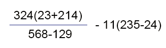
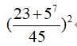
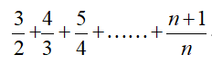

答：1.写在 html 中的 <script>标签中。
2.写在外部 js 文件中，在页面引入。
答：定义方法：使用一个 var 的关键字进行定义，后面必须加一个空格，空格后面自定义变量名。
变量的命名规则和规范
规则 - 必须遵守的，不遵守会报错
由字母、数字、下划线、 $ 符号组成，不能以数字开头。
字母区分大小写， A 和 a 表示不同。
不能是关键字和保留字，关键字指的是js中有特殊功能的小词语，比如 var、 for 等；
保留字指的是现在没有特殊功能，但是将来新语法中有可能作为关键字使用。
规范 - 建议遵守的，不遵守不会报错
变量名必须有意义
遵守驼峰命名法。多个单词组合而成的，第一个单词首字母小写，后面单词的首字母需要大写。
例如： userName、 userPassword
答：== 相等，只判断值大小是否相等，不判断数据类型
=== 全等，不光判断值相等，还要判断数据类型相等
答：Number 数字类型
数字类型，不区分整数、浮点数、特殊值，都是 Number 类型
String 字符串类型
字符串类型，所有的字符串都是 String 类型
undefined undefined 类型
undefined 本身是一个数据，表示未定义。
变量只声明的时候值默认是 undefined。
Boolean 布尔类型
Boolean 字面量： 只有 true 和 false 两个字面量的值，必须是小写字母。
计算机内部存储： true为1， false为0
null null类型
null 本身是一个数据。
从逻辑角度， null值表示一个空对象指针。
如果定义的变量准备在将来用于保存对象，最好将该变量初始化为 null。
答：+ - * / % ()
%:取余，取模。 a / b = c 余 d，就说a % b = d。
运算顺序：先算乘除取余、再算加减，有小括号先算小括号。
答：> 大于
< 小于
>= 大于等于
<= 小于等于
== 相等，只判断值大小是否相等，不判断数据类型
!= 不等，与相等完全相反
=== 全等，不光判断值相等，还要判断数据类型相等
!== 不全等，与全等于完全相反
答：&& 逻辑与运算符 且
|| 逻辑或运算符
! 逻辑非运算符
答：以上JS代码全部执行完时，j和y均为102；
9. 计算下列算式，并将结果输出：
答：
10. 住房公积金缴纳金额与工资两者的关系是：
住房公积金 = 税前工资 * 0.1 * 2 ;
编写程序，让用户输入税前工资，弹出对应的公积金数额。
答：
11. 用JS计算下列算式，并将结果在弹出：
答：
12. 编写程序，提示用户输入圆锥的底面半径和高，然后弹出它的体积，计算圆锥体积的公式是：
体积V=1/3π半径2*高
答： 半径 高度
13.如果今天是星期二，那么1000天后是星期几？用户输入一个天数，计算这个天数后是星期几。
答： 今天是 , 天后是
14. 用户输入一个三位数，弹出各个数位的和。
答： 请输入一个三位数
15. 用户输入一个数字，然后判断这个数字能否被5、6整除的情况，根据情况弹出下面4种警告框：
答： 请输入一个数
16. 用户输入一个数字，然后再输入一个数字。然后弹出警告框：判断奇偶性是否一致
答： 请输入一个数 请输入另一个数
17. 用户输入一个年份，判断这个年是否是闰年。
答： 请输入一个年份
18. 推导循环执行的顺序，用文字进行说明，并推导出可能的结果。
for(var m = 1,n = 2; m + n < 25; m++){
n += 3;
console.log(m);
}
答：n在循环体内自增3，m在每次循环体最后自增1，当m+n>=25的，循环结束。
所以实际输出为1、2、3、4、5、6
点击按钮运行代码，在控制台查看加入的调试信息
19. 推导循环执行的顺序，用文字进行说明，并推导出可能的结果。
for(var i = 30 ; i > 5 ; i -= 7){
console.log(i--);
}
答：i在输出自己后自减1，又在每次循环体最后自减7，i<=25的，循环结束。
所以实际输出为30、22、14、6
点击按钮运行代码，在控制台查看加入的调试信息
20. 用户输入一个数字n，计算1+2+3+4+……n的和。
答： 请输入一个数字
21. 用户输入一个整数n，计算n的阶乘。即n*(n-1)*(n-2)*……*3*2*1.
答： 请输入一个数字
22. 用户输入一个数字n
计算 
答： 请输入一个数字
23. 用户输入一个数字，在控制台中列出它的所有约数。
答： 请输入一个数字
24. 水仙花数是一种特殊的四位数，它的特点就是，每个数位的四次方和，等于它本身。
答：
25. 如果一个数恰好等于它的约数之和，则称该数为“完美数”。
答：
26. 用户输入一个数字，判断这个数字是否是质数。
答： 请输入一个数字
27. 列出1~10000的所有质数。
答：
28. 苹果3元一个，鸭梨2元一个，桃子1元一个。现在想用200元正好买100个水果，在控制台中列出所有可能性。
答：
29. 有这样一个代码
switch(name) {
case "jt":alert('金团网);break;
case "ejt":alert('金团相相贷'); break;
case "ejin":alert("网上综合金融体验馆");break;
default:alert("金团网络典当");
}
请用if来实现上面的效果
答： 请输入字符串
答：三种循环
1.for循环
2.do while循环
3.while循环
答：break语句:
我已经找到我要的答案了，我不需要进行更多的循环了！
break 语句的作用可以立即停止当前的 for、do while、while 循环。
根据一些条件设置 break 位置，直到循环能够执行到 break 语句立即停止执行，跳出循环。
continue语句:
这个答案不是我想要的，赶紧试试下一个吧！
遇到 continue 表示当前的一次循环数据不是我们想要的，会立即停止当前次的循环，立即进入下一次循环。
32. 请用循环计算出 1+2+3+4+5+...+100 的值
答：
33. 开发一款软件，根据公式（身高-108）*2=体重，可以有10斤左右的浮动。判断测试者体重为标准体重还是超重还是偏瘦
答： 请输入身高（厘米）
请输入体重（斤）
34. var grade = prompt("请输入分数");
switch (parseInt(grade / 10)) {
case 10:
case 9:
alert("你的成绩等级为优秀");break;
case 8:
case 7:
case 6:
alert("你的成绩等级为良好");break;
default:
alert("你的成绩等级为不及格，继续加油哦！");
}
将上述代码使用switch写法的另一种方式实现，以及使用if判断实现一次
答：
35. 输入月份，显示当月天数（输入2月时需要再次输入年份判断是不是闰年后在显示当月天数）
答：